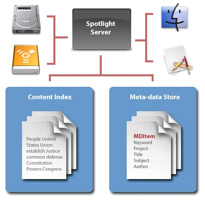

Tijger fetisjisme
zondag 12 december 2004 | Apple
Hij zal minstens nog een half jaar op zich laten wachten, maar ik lig er nu al van wakker: Tiger nadert!
'Tiger' is het koosnaampje voor de vierde editie van het op UNIX gebaseerde besturingssysteem voor Macintosh, waar Steve Jobs eerder dit jaar een tipje van de sluier van heeft opgelicht. Tiger is revolutionair: het zal (technisch gezien) alle nog resterende (?) concurrentie op deze wereldbol gewoon wegblazen. En ik heb het niet alleen over de uitbundige eye candy die het besturingssysteem zo typeert: blader gewoon eens door de specificaties (PDF, 1Mb) die werden verdeeld onder ontwikkelaars. Een aantal zaken waar Apple aan werkt, zijn allesbehalve evident en breken in alle opzichten met bestaande vastgeroeste ideeën over hoe een besturingssysteem er moet uitzien: 64-bit, resolutie-onafhankelijke interfaces, bestandsbeheer via meta-data (pas verwacht voor Windows-gebruikers tegen 2008), SQL databases voor applicaties, WYSIWIG scripting met Pipeline, ACL's,... de lijst is eindeloos.
De twee features die mij persoonlijk het meeste aanspreken zijn Spotlight en Dashboard, niet toevallig de meest 'zichtbare' vernieuwingen van Mac OS X ;-)
Spotlight is een desktop search tool, zoals Google Desktop dat is voor Windows, maar dan met twee zeer grote verschillen. Spotlight maakt geen gebruik van een cache (die per definitie altijd verouderd is) maar indexeert automatisch alles wat reilt en zeilt op je harde schijf. Ten tweede kan elke programmeur met zijn applicatie inhaken op Spotlight, zodat het besturingssysteem in principe alle bestandstypen van kop tot teen zal kunnen doorlichten. Google Desktop daarentegen werkt bijvoorbeeld enkel met Outlook Express en Internet Explorer, wat de bruikbaarheid ervan toch enigszins beperkt in deze prille Microsoft-exodus tijden. Misschien geen echte 'feature', maar wel erg spectaculair: Spotlights' gevonden resultaten flitsen al op het scherm nog voor je een zoekterm volledig hebt kunnen intikken (het gaat hier voor de duidelijkheid om een zoekopdracht in de inhoud van tientallen gigabytes bestanden).
Dan is er Dashboard: een nieuwe 'laag' voor Mac OS X die je te voorschijn tovert met de F12-toets, waar allerlei mini-tooltjes en programmaatjes hun thuis vinden. Denk maar aan post-its, een rekenmachientje, een beurstracker, een weerbericht, een afstandsbediening voor iTunes, etc... Die tooltjes ('widgets') bestaan uit een combinatie van standaard HTML, CSS en Javascript, waardoor elke webdesigner zich tot een wannabe-programmeur kan ontplooien. Apple heeft vorige week voor de tweede keer een wedstrijd uitgeschreven voor haar geabonneerde developers voor wie met de leukste of handigste widget komt aandraven. De eerste keer won Michael Robinette met zijn WikityWidget, een mini wiki voor je computer. Op mijn persoonlijk todo-lijstje staat alvast een post-to-nucleus-widget. Oh ja, het ripple-effect al gezien?
Good times ahead dus voor Mac-zeloten en toekomstige Windows/(Linux) afvalligen. Het is een heerlijk gevoel om op de eerste rij te zitten van de wonderbaarlijke technologische evolutie. In de naam van Apple, in de naam van Steve, Amen.

Dries Fransen op 17 december 2004
moest apple zo slim zijn om hun operating systems ook voor de gewone pc werkbaar te maken, zou ik net als een pak andere mensen direct overstappen.
Het enige probleem dat er voor mij bestaat zijn de redelijk grote kosten die je moet maken om een redelijk apple systeem aan te kopen. Spijtig maar voor de studerende mens is €2000 enorm veel geld.